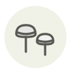

Candy cap ✦
Candy cap
| Latin name | Lactarius rubidus |
|---|---|
| Family | Mushrooms |
| Origin | Californian coastal woods |
| Season | November – February |
| Flavour | Sweet · Toasty · Warm · Honeyed |
| Typical price | 150–300 €/kg |
What it is
Fresh, it smells of almost nothing; dried, a reaction between its amino acids produces quabalactone III, which breaks down into sotolon — the same molecule that carries maple syrup and fenugreek. Thirty grams will scent a room for days, and it is sold dried and by weight, as a flavouring rather than as a vegetable.
In the kitchen
Grind the dried caps to powder and steep them twenty minutes in warm cream: about four grams a litre is enough, and past that it turns bitter and curry-like. Its savoury uses are not worth the trouble — put it in ice cream, custard or shortbread.
Goes with
Cream Egg Maple syrup Dark chocolate Pecan Vanilla
Same species
Bloody milk cap Saffron milk cap
In season alongside
Sidr honey Japanese tilefish (amadai) Arbutus berry Chestnut Date Grey shallot
Something wrong here, or missing? Tell us